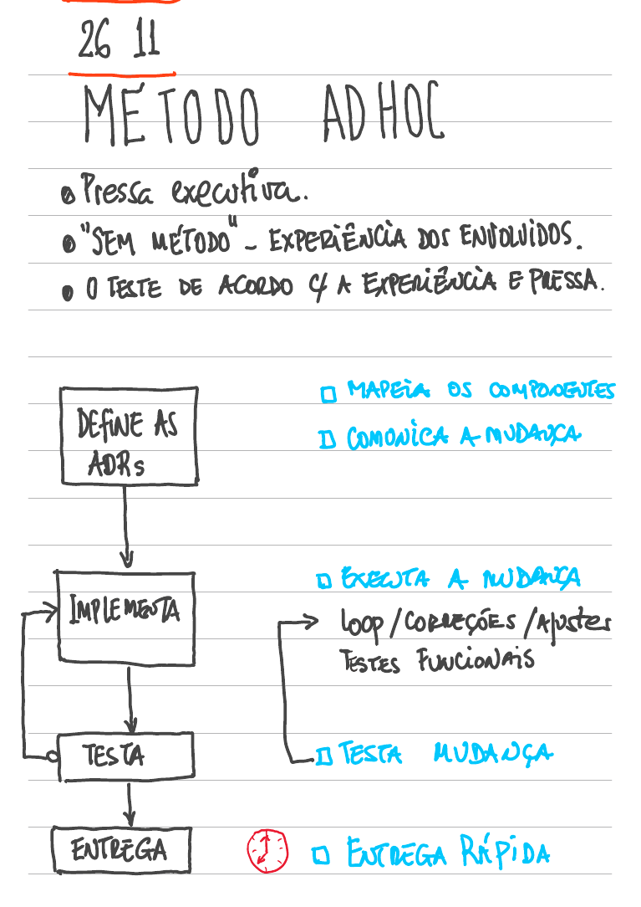

O fluxo, caixa por caixa
Preencham na ordem do desenho. A caixa em destaque acompanha o relógio.
Define as ADRs3 a 13 min
Mapeia os componentes
Alternativas de mudança (ADRs)
Comunica a mudança
Print para o Miro · · D1 · Define as ADRs
Implementa13 a 21 min
Executa a mudança
Print para o Miro · · D1 · Implementa
Testa21 a 27 min
Testa a mudança
Loop: correções e ajustes
Print para o Miro · · D1 · Testa
Entrega27 a 30 min
Entrega rápida
Print para o Miro · · D1 · Entrega
Levar para a Dinâmica 2
Copiem o código e colem na página da Dinâmica 2. Ele leva o grupo, o caso e as alternativas de mudança. O texto completo também pode ir para o Miro.